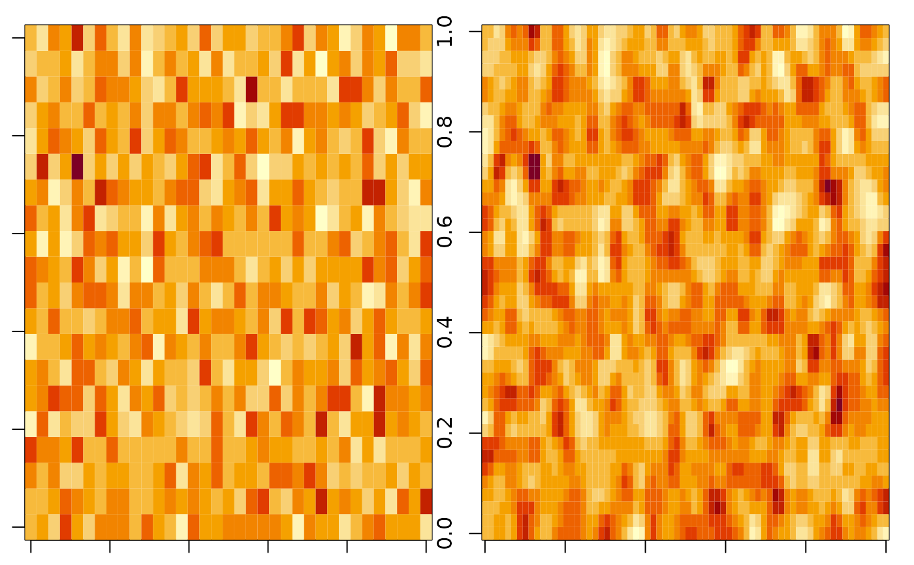

spInterp_bilinear.RdBilinear interpolation for 3d array
spInterp_bilinear(
z,
dims = NULL,
range = c(70, 140, 15, 55),
res = 1,
na.rm = TRUE,
convertTo2d = FALSE
)3d array (lon, lat, time), with the dimension of [nlon, nlat, ntime]. image(z[,,1]) should look normal.
If true, Na value in margin will be fixed.
A list object with lon, latandloc`.
lon: numeric, [nlon]
lat: numeric, [nlat]
A list object with lon, lat and loc.
lon: numeric, [nlon]
lat: numeric, [nlat]
loc: a data.frame with the column of c("x", "y"), with the row length of
nlon*nlat.
High resolution interpolating to low resolution will lead to unreliable
result, if cellsize.new/cellsize.origin > 2.
set.seed(1)
## first example: simulated data
range = c(70, 140, 15, 55)
dims = make_dims(range, res = 2)
nlat <- length(dims$lat)
nlon <- length(dims$lon)
ntime <- 10
z <- array(rnorm(nlon*nlat*ntime), c(nlon, nlat, ntime))
z_bl <- spInterp_bilinear(z, dims, range, res = 1)
par(mfrow = c(1, 2), mar = c(1, 1, 1, 1))
image(z[,,1])
image(z_bl[,,1])

## second example: real data
# f = system.file("inst/extdata/PMLV2_veg-dynamic_GPP_2014.tif", package = "spInterp")
# PMLV2_2014_gpp = terra::rast(f) %>% sf2::rast_array()
arr = PMLV2_2014_gpp
interp_PML <- function(arr, res = 2, plot = FALSE) {
range = c(-180, 180, -60, 90)
dims = make_dims(range, res = 1)
arr_bl <- spInterp_bilinear(arr, dims, range, res = res)
if (plot) {
par(mfrow = c(2, 1), mar = c(0, 0, 0, 0))
image(arr[,,1])
image(arr_bl[,,1])
}
arr_bl
}
arr_deg2_v0 = interp_PML(arr, res = 2)
arr_deg2_v1 = interp_PML(arr[,,1], res = 2)
all.equal(arr_deg2_v0, arr_deg2_v1)
#> [1] TRUE
arr_deg05 = interp_PML(arr, res = 0.5)
# Ipaper::write_fig({ tmp = interp_PML(arr, res = 0.5, TRUE)}, "bilinear_gpp.png", 8, 6)
# Ipaper::write_fig({ tmp = interp_PML(arr, res = 2, TRUE)}, "bilinear_gpp.png", 8, 6)